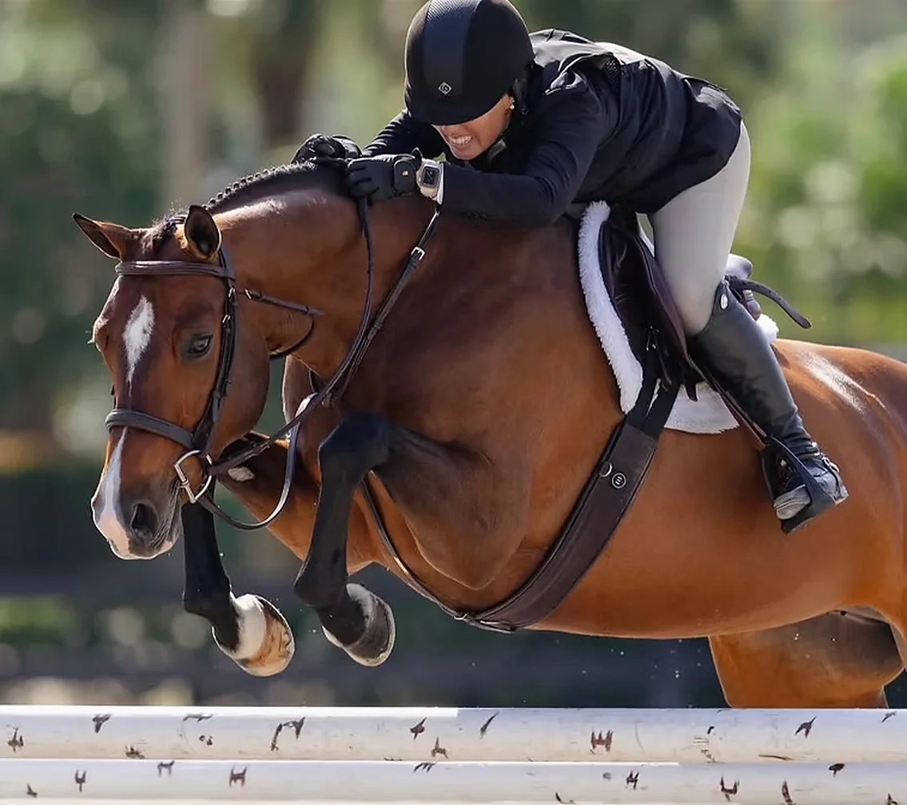
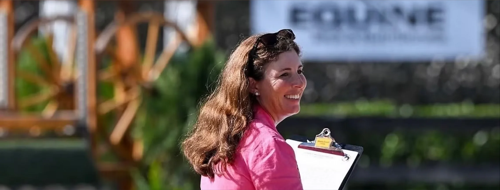
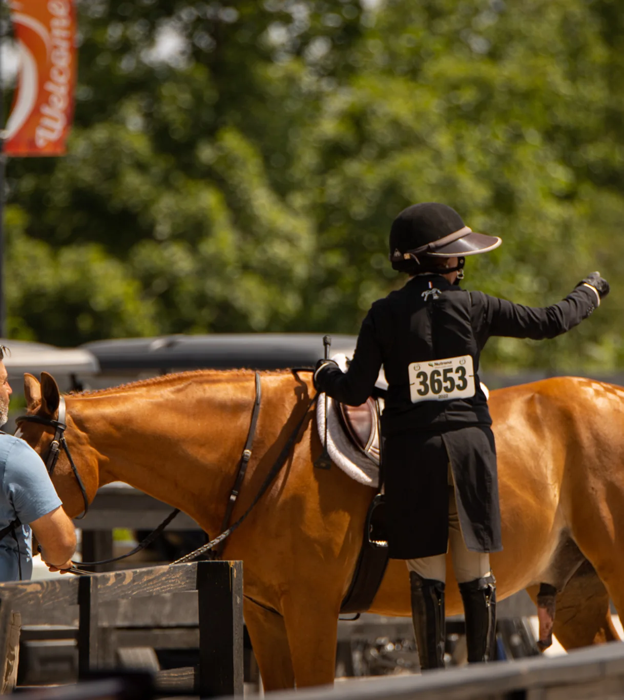
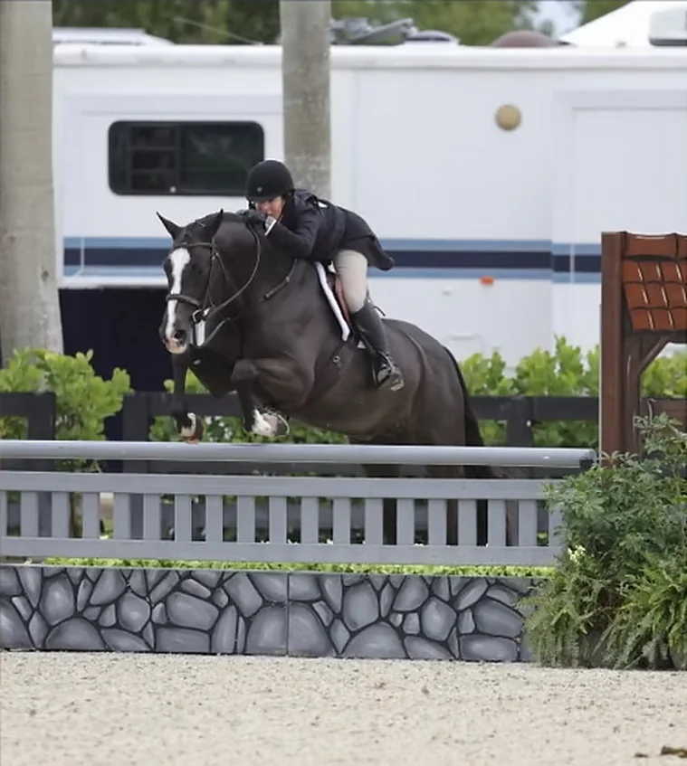
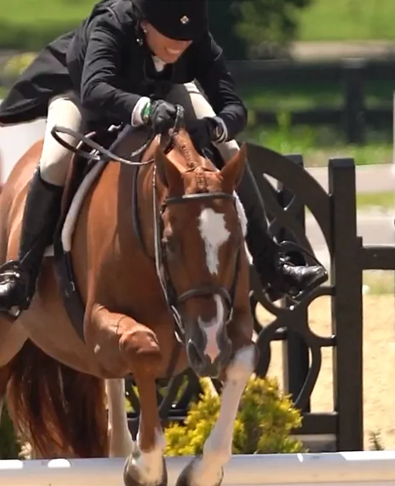
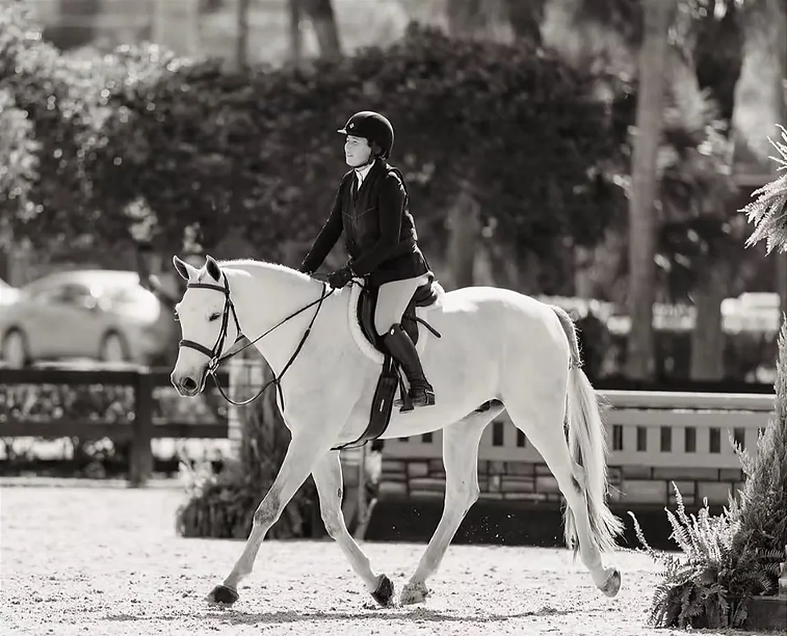

Shows
The season,ring by ring.
Winter at Wellington International and WEC Ocala, summer through the Southeast and Midwest, fine tuned each year around the riders and horses.

Calendar
JanFebMarAprMayJunJulAugSepOctNovDec
Wellington International
Wellington, Florida
WinterWEC Ocala
Ocala, Florida
WinterSoutheast and Midwest
Chosen each year
Summer
The show schedule is fine tuned each year as needed.
Highlights
- No.1
WCHR Developing Professional National Champion, 2014
- Top10
USHJA International Hunter Derby Championship
- Top10
Palm Beach Hunter Spectacular
- Top5
USHJA Pre Green Incentive Finals

Record
JuniorsNew York
On the “A” circuit
- Pony Finals championships
- WCHR awards in the pony and junior hunter divisions
- Top ten placings in the Equitation Finals
2008Wellington
Harris Hill Farm opens
- Jennifer opens Harris Hill Farm, LLC, and builds it into a training, showing and sales stable
2011Certified
USHJA Trainer’s Certification
- Jennifer earns her official USHJA Trainer’s Certification
2014Champion
WCHR Developing Pro National Championship
- Won on a horse Jennifer brought along herself
SinceThe ring
Derbies, Devon and Indoors
- Top placings at Devon and Indoors
- National and International Hunter Derby wins
- Top ten in the USHJA International Hunter Derby Championship and the Palm Beach Hunter Spectacular
- Top five in the USHJA Pre Green Incentive Finals
TodayRingside
Trainer, and USEF “R” judge
- Hunter and Equitation divisions
- Students winning at the premier shows on the East Coast, from the pony ring to the Amateur Hunters




The season
Show with Harris Hill.
Bring your goals for the year, and plan the season with Jennifer.